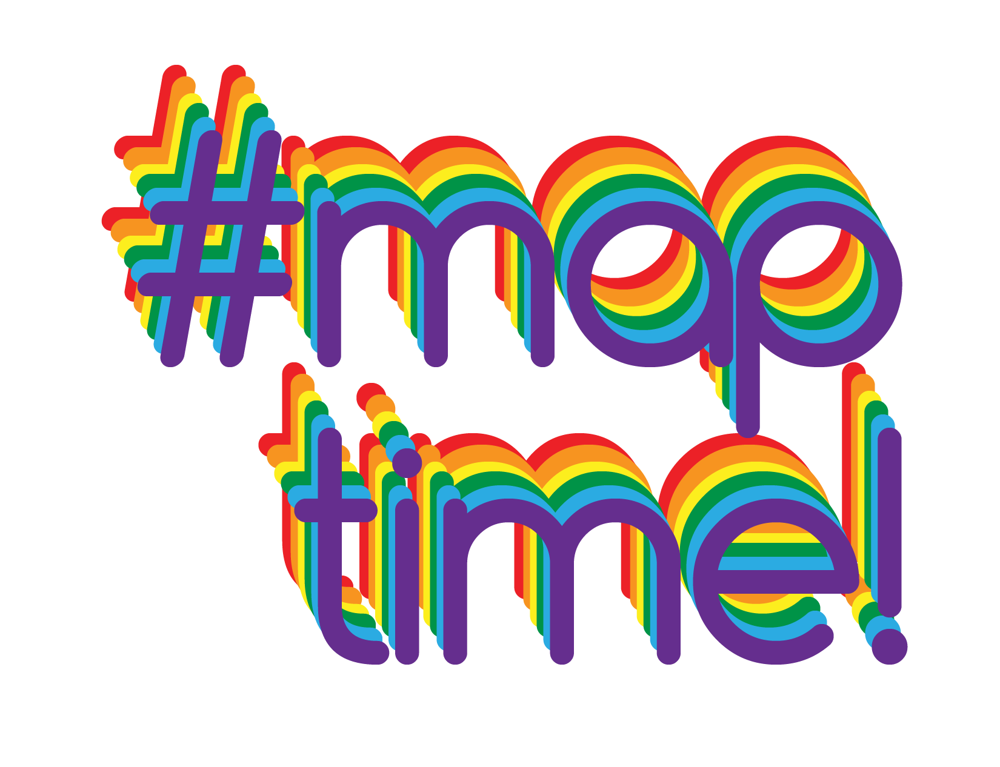Maptime!
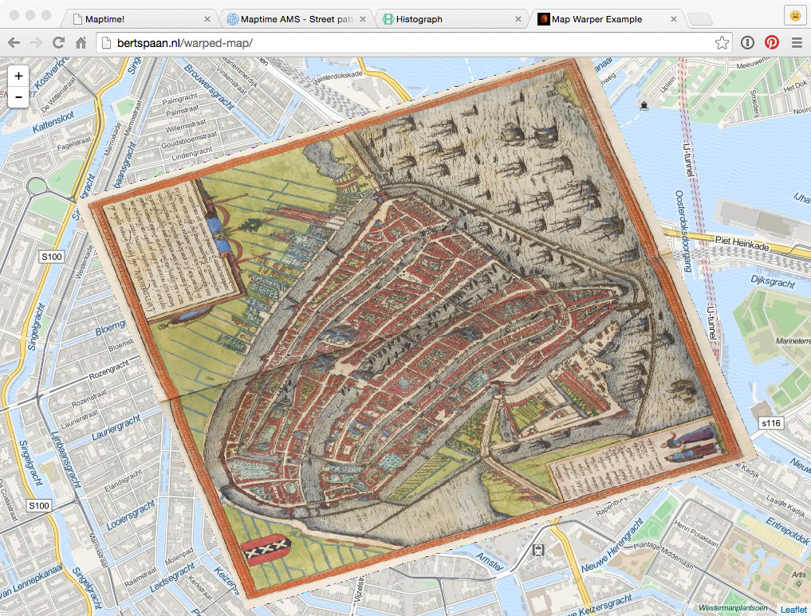Corsica!
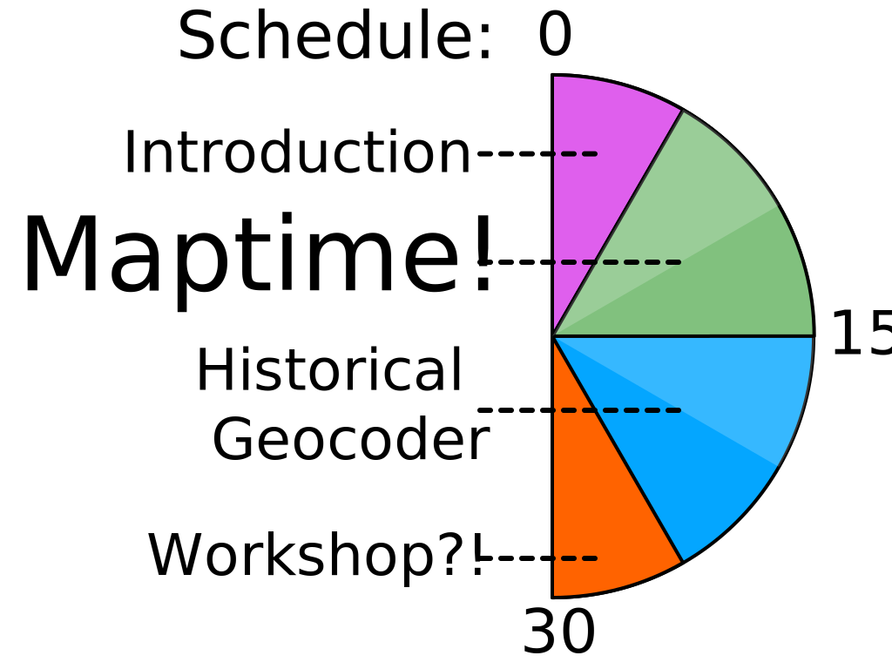Schedule
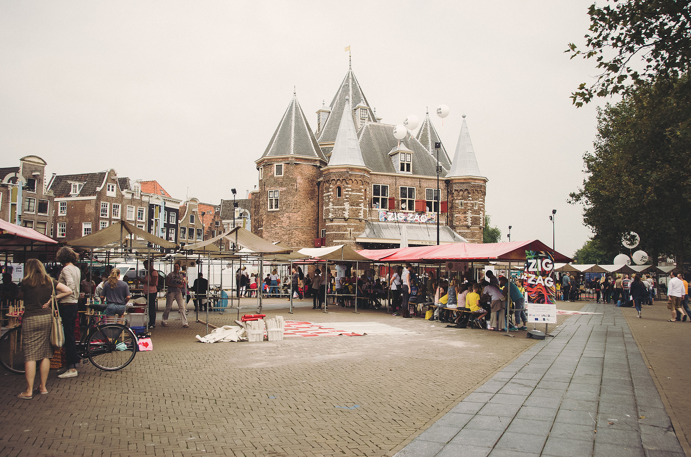Nieuwmarkt
Open Data
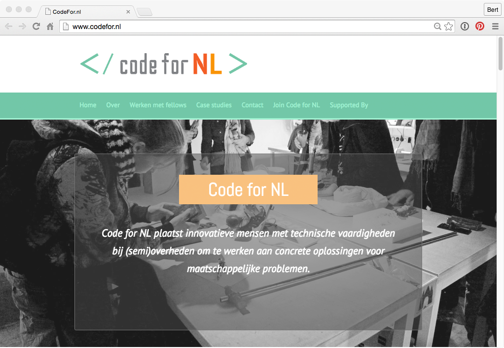Buildings map
Open Hardware, Open Bio, Open Design
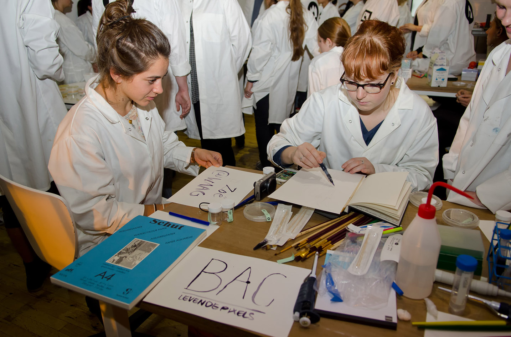Open Wetlab
OK. Now, it's...
Maptime!
Maps for all forever!
- A time for learning about maps
- Hands-on
- Beginner-focused
- Emphasis on open source, programming, and web-mapping
Please bring a laptop! Beginners very welcome.
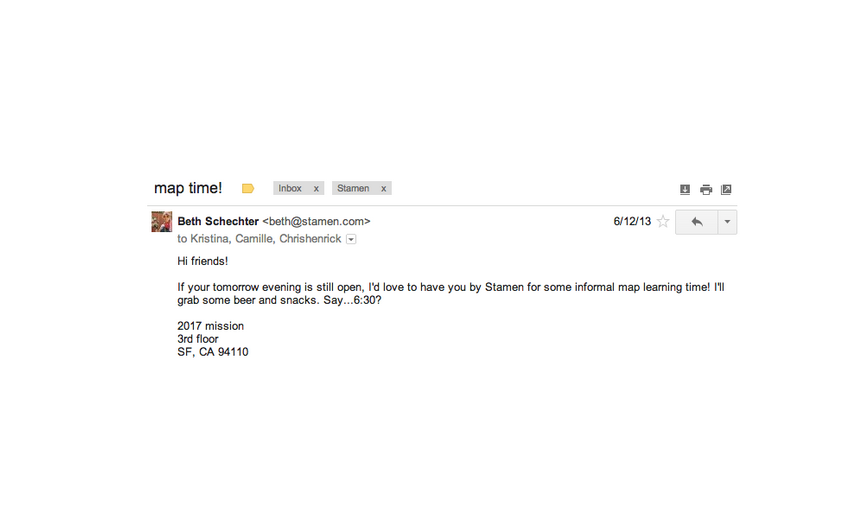How it all got started
Previously: GIS, expensive, closed-source, difficult

ArcGIS
Maptime: open source, tutorials, share knowledge

GitHub Diff
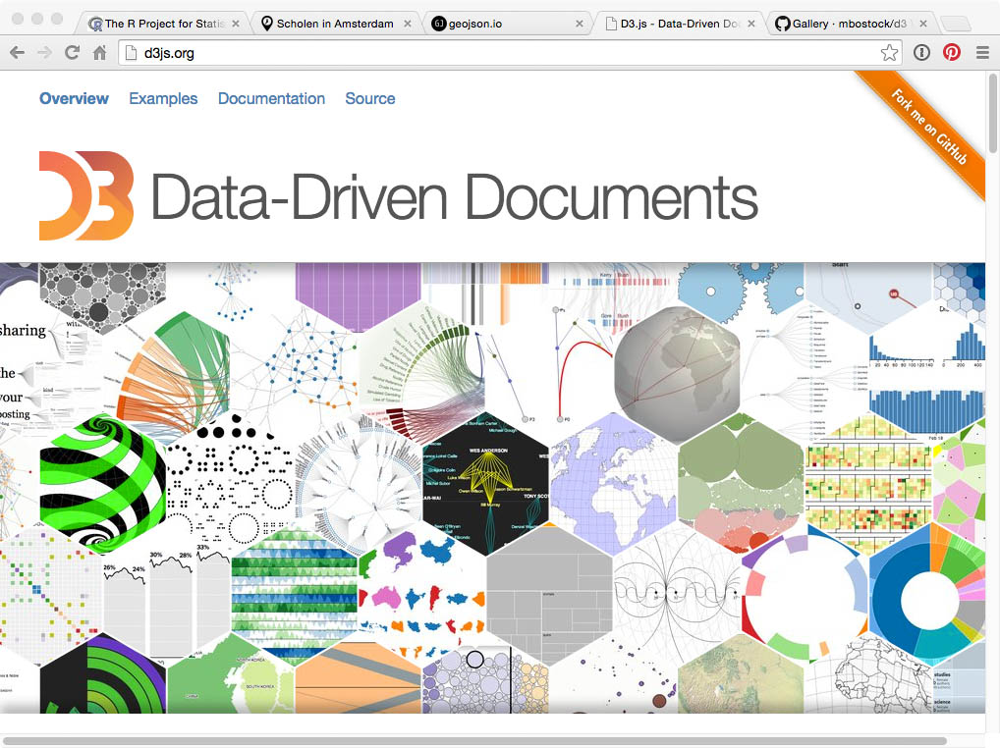D3.js

Leaflet

Mapbox Studio

OpenStreetMap

geojson.io

Fablab

maptime.io - resources
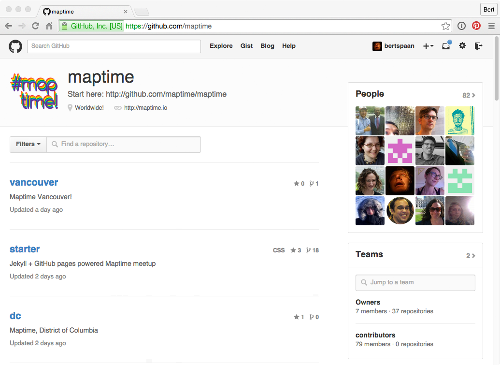Maptime on GitHub

Maptime Amsterdam

Maptime Amsterdam

Maptime Amsterdam
Maptime Amsterdam
Designers, developers, students,
cartographers, historians, architects
Beginners and experts!
Historical Geocoder
Haga Comitis
Vondelkade, Amsterdam
Datasets: TGN, GeoNames, Dutch East India Company archives, monastry registries, OSM, DBpedia, Wikidata, etc.
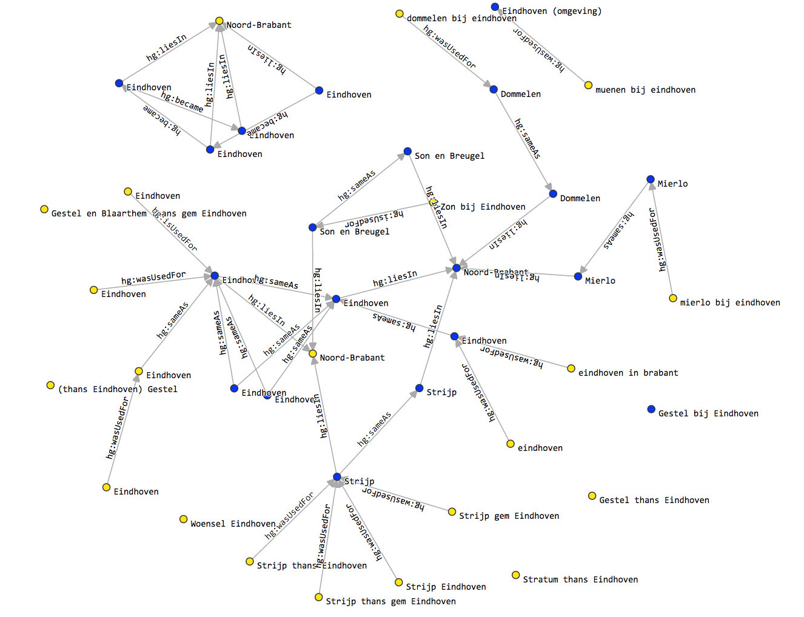Historical Geocoder
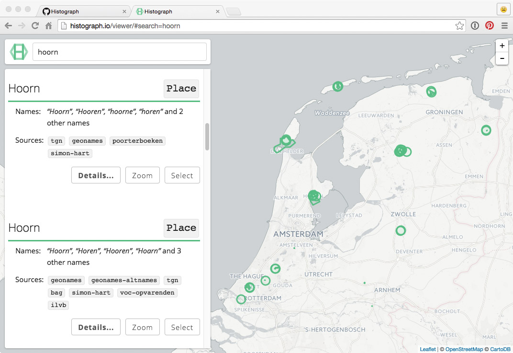Historical Geocoder
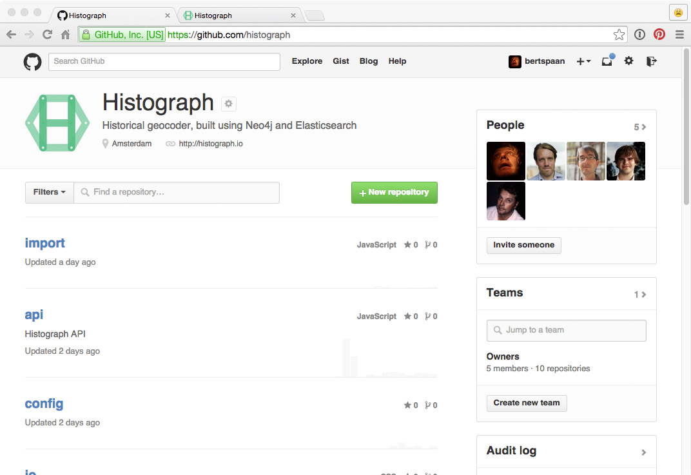Historical Geocoder
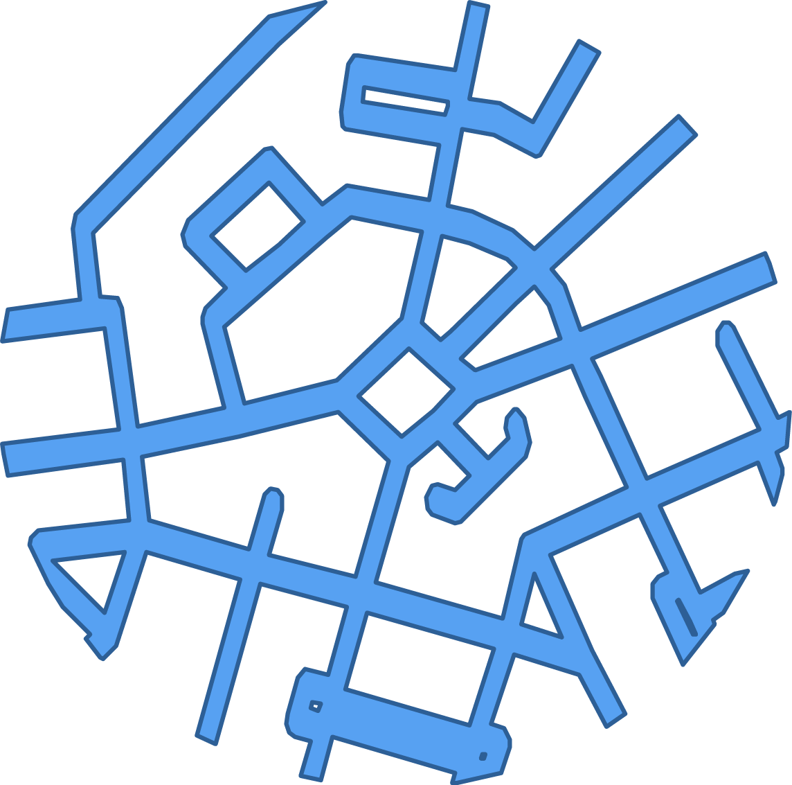Betondorp
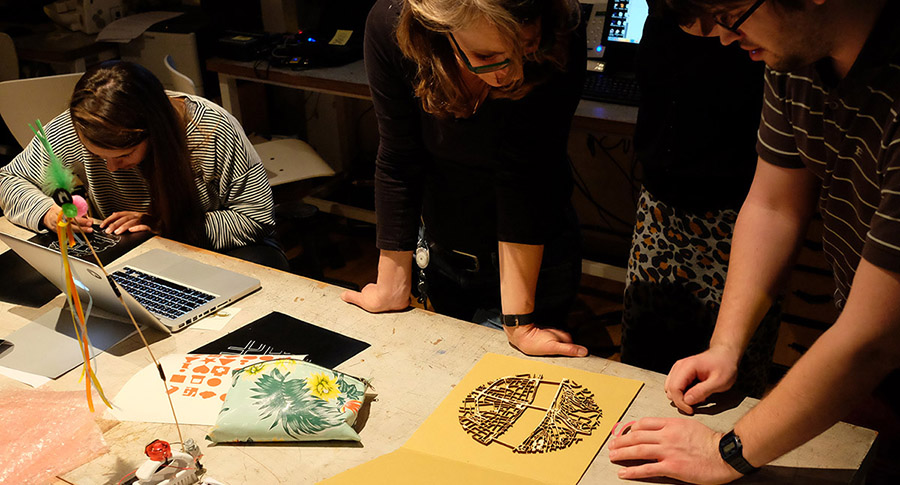Budapest
Thanks!